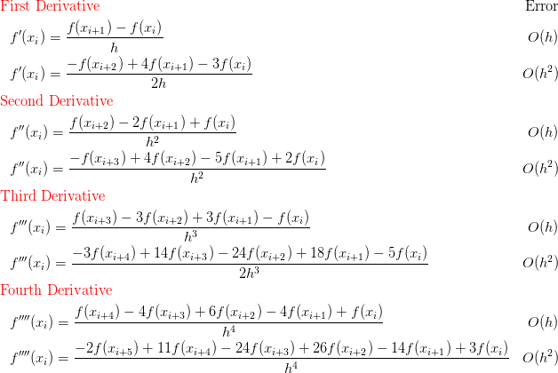
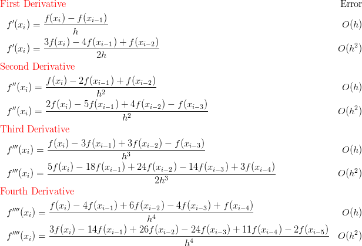
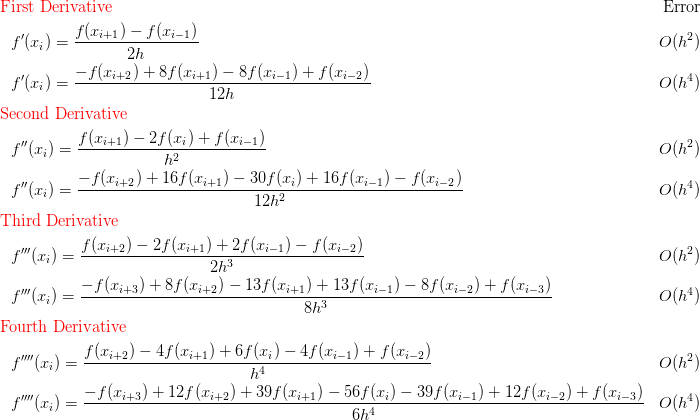
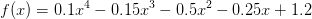

고정도 미분공식은 Taylor 급수 전개로 부터 유도된다. 고정도 미분공식은 함수의 형태를 알거나 데이터의 간격이 등간격일 경우 사용한다.
후자가 Taylor 급수 전개에 더 많은 항들이 포함되어 결과적으로 더 정확하다.

후자가 Taylor 급수 전개에 더 많은 항들이 포함되어 결과적으로 더 정확하다.

후자가 Taylor 급수 전개에 더 많은 항들이 포함되어 결과적으로 더 정확하다.


x = 5, h = 0.25
rm(list = ls()) # Remove all variable
f <- function(x) {
y <- -0.1*x^4 - 0.15*x^3 - 0.5*x^2 - 0.25*x + 1.2
return(y)
}
cen.f <-function (func, x, h){
x.m2 <- x-2*h
x.m1 <- x-h
x.p1 <- x+h
x.p2 <- x+2*h
der <- (-func(x.p2) + 8*func(x.p1)-8*func(x.m1)+func(x.m2))/(12*h)
return(der)
}
x <- 0.5
h <- 0.25
der <- cen.f(f, x, h)
deroutput : -0.9125